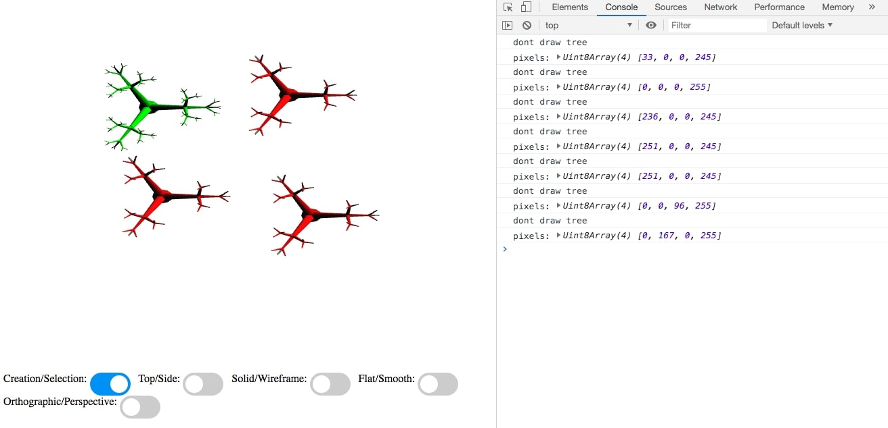

Celine Seghbossian
Login: cseghbos@ucsc.edu
CSE 160 -- Prog 2
Monday, October 28, 2019
List of Files:
/prog2/
prog2.js
driver.html
features.html (this file)
output1.jpg
output2.jpg
output3.jpg
output4.jpg
This program implements some of the functionality as specified in the Prog2 Requirements.
-
Ortho/Perspective
This feature is complete
-
Render Mode
This button works but the flat shading does not take into account the light and renders a solid color (red).
-
Trees
The trees aer not rendered properly because the branches did not get rotated properly. All other transformations worked.
For more information on implementation, please reference function descriptions in prog2.js
Link for grader:
driver.html

